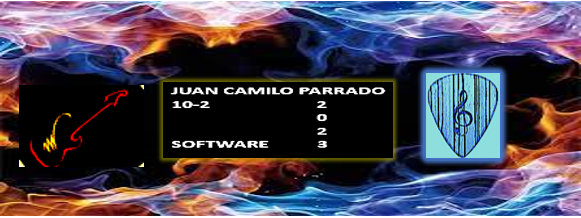

Mi nombre es Juan Camilo Parrado Gallego tengo 15 años, nací el 19 de marzo de 2008 en el municipio de Yopal, Casanare pero aun así viví mi gran parte de mi niñes en Monterrey Casanare. Allí viví seis años, con mi madre Laura Milena Gallego Guitierrez, ya que mis papás estaban separados; las tardes las pasaba en casa de mis abuelos maternos, Voltaire Gallego Diaz y Aurora Gutierrez Diaz, alli jugaba con mis primos Sebastian Ovalles y Alejandro Ovalles, jugabamos a poner colchonetas en la escalera para el segundo piso de la casa y nos deslizabamos en ellas como si fuera un tobogan... Algunos fines de semana los pasaba en la casa de mi papa Richard Parrado, iba con mis hermanos Andres Felipe Parrado y David Ricardo parrado, a veces cuando estabamos con el íbamos a pescar durante la tarde.
